Platform Changes
A code mining is represented by org.eclipse.jface.text.codemining.ICodeMining which are provided by org.eclipse.jface.text.codemining.ICodeMiningProvider.
The org.eclipse.jface.text.source.ISourceViewerExtension5 provides the capability to register org.eclipse.jface.text.codemining.ICodeMiningProvider and update the code minings.
The example CodeMiningDemo draws the Class references and implementations code minings:
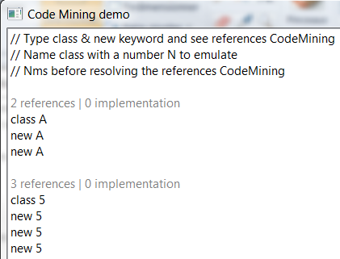
org.eclipse.jface.text.codemining.ICodeMiningProvider in a text editor using ISourceViewerExtension5.
Associating providers via this extension doesn't automatically enable code-mining, so clients are also supposed to use a reconciler or whatever event mechanism to invoke ISourceViewerExtension5.updateCodeMinings().
For instance you can consume the org.eclipse.jface.text.codemining.CodeMiningReconciler to update the registered CodeMining providers.
The GenericEditor Example displays the number of referenced projects:
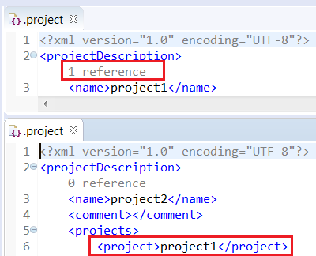
This sample consumes the code mining provider ProjectReferencesCodeMiningProvider
which is registered with the org.eclipse.ui.workbench.texteditor.codeMiningProviders extension point:
<extension
point="org.eclipse.ui.workbench.texteditor.codeMiningProviders">
<codeMiningProvider
class="org.eclipse.ui.genericeditor.examples.dotproject.codemining.ProjectReferencesCodeMiningProvider"
id="org.eclipse.ui.genericeditor.examples.dotproject.codemining.references"
label="Project references">
<enabledWhen>
<with variable="editorInput">
<adapt type="org.eclipse.core.resources.IFile">
<test property="org.eclipse.core.resources.contentTypeId" value="org.eclipse.ui.genericeditor.examples.dotproject" />
</adapt>
</with>
</enabledWhen>
</codeMiningProvider>
</extension>
This code mining provider is updated with the org.eclipse.jface.text.codemining.CodeMiningReconciler reconciler.
<extension
point="org.eclipse.ui.genericeditor.reconcilers">
<reconciler
class="org.eclipse.jface.text.codemining.CodeMiningReconciler"
contentType="org.eclipse.ui.genericeditor.examples.dotproject">
</reconciler>
</extension>
org.eclipse.jface.text.source.inlined.InlinedAnnotationSupport draws the content of the annotations in the StyledText without the actual payload text nor modifying the line numbers.
Each annotation takes care of placing the necessary space, vertically or horizontally, in the StyledText widget to draw the content.
The example InlinedAnnotationDemo draws:
- The colored square of the RGB color declaration in the line content (use of LineContentAnnotation).
- The result status (OK! / ERROR!) of parsing the RGB color declaration in the line header (use of LineHeaderAnnotation).
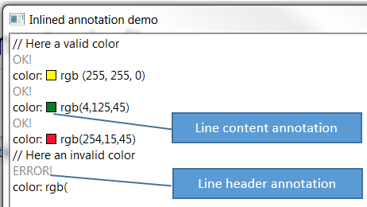
Consumer<MouseEvent> getAction(MouseEvent e).
The example InlinedAnnotationDemo defines
an action to open the org.eclipse.swt.widgets.ColorDialog when you click on the color annotation:
public ColorAnnotation extends LineContentAnnotation {
...
@Override
public Consumer<MouseEvent> getAction(MouseEvent e) {
return ev -> {
// Open the Color dialog when color annotation is clicked
};
}
}
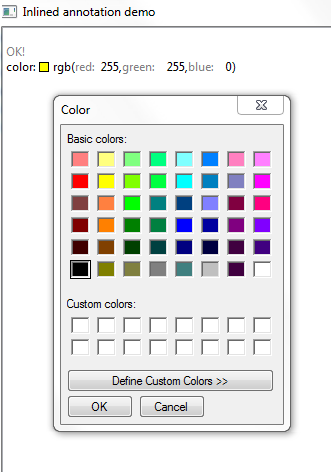
org.eclipse.jface.text.reconciler.IReconciler for highlighting to provided content-types.
Reconcilers attached to this extension point that listen to the preference org.eclipse.ui.genericeditor.togglehighlight will be toggled with the Toggle Highlight button.
<extension point="org.eclipse.ui.genericeditor.highlightReconcilers">
<highlightReconciler
class="org.eclipse.ui.genericeditor.examples.TagHighlightReconciler"
contentType="org.eclipse.core.runtime.xml"/>
</extension>
ITextSelection
can be adapted to an IVariable. So, in order to take advantage of debug details on hover in the Generic
Editor, you can simply use the org.eclipse.core.runtime.adpaters extension point and define an IAdapterFactory
from ITextSelection to IVariable to enable this feature.
If the current selection cannot be adapted (all adapter factories return null), the contribution to Generic Editor is ignored.
The JDT project already contributes such an adapter.
org.eclipse.jface.text.IAutoEditStrategy
or org.eclipse.jface.text.reconciler.IReconciler respectively for a provided content-type.Typical use cases for auto-edit strategies would be auto-indent, auto-closing braces or other syntax rules.
<extension point="org.eclipse.ui.genericeditor.autoEditStrategies">
<autoEditStrategy
class="org.eclipse.ui.genericeditor.demo.CloseTagAutoEditStrategy"
contentType="org.eclipse.core.runtime.xml"/>
</extension>
Possible use cases for reconcilers would be code folding or a spell checker.
<extension point="org.eclipse.ui.genericeditor.reconcilers">
<reconciler
class="org.eclipse.ui.genericeditor.demo.TagFoldingReconciler"
contentType="org.eclipse.core.runtime.xml"/>
</extension>
This allows, for example, to contribute 3 distinct
hovers for problem details, code documentation and debug details via the
org.eclipse.ui.genericeditor.hoverProviders extension point, and to get
those 3 contributions shown simultaneously when hovering in the Generic Editor.
Hovers that return null as hover range or hover info for a given
location would be ignored.
autoEditStrategies, contentAssistProcessors, highlightReconcilers,
hoverProviders, presentationReconcilers, reconcilers) now allows an enabledWhen child elements for
contributions. This enableWhen is a Core Expression that controls whether the declared extension is enabled when insantiating the editor.
The evaluation context defines extra variables you can use in the expression: viewer, editor and editorInput.
This example shows how LSP4E contributes server highlight reconciler only for editor input supporting a language server:
<extension
point="org.eclipse.ui.genericeditor.highlightReconcilers">
<highlightReconciler
class="org.eclipse.lsp4e.operations.highlight.HighlightReconciler"
contentType="org.eclipse.core.runtime.text">
<enabledWhen>
<with
variable="editorInput">
<test
property="org.eclipse.lsp4e.hasLanguageServer">
</test>
</with>
</enabledWhen>
</highlightReconciler>
</extension>
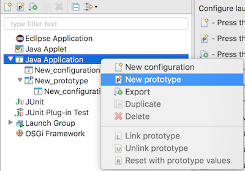
A prototype seeds attributes in its associated launch configurations with the settings specified in the Prototype tab.

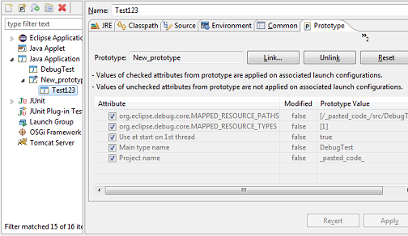
Prototypes are already enabled for JDT and PDE launch configurations. Others projects have to enable prototypes withorg.eclipse.debug.core.launchConfigurationTypes extension point:
<extension
point="org.eclipse.debug.core.launchConfigurationTypes">
<launchConfigurationType
allowPrototypes="true"
delegate="org.eclipse.jdt.launching.sourcelookup.advanced.AdvancedJavaLaunchDelegate"
delegateDescription="%localJavaApplicationDelegate.description"
delegateName="%eclipseJDTLauncher.name"
id="org.eclipse.jdt.launching.localJavaApplication"
migrationDelegate="org.eclipse.jdt.internal.launching.JavaMigrationDelegate"
modes="run, debug"
name="%localJavaApplication"
sourceLocatorId="org.eclipse.jdt.launching.sourceLocator.JavaSourceLookupDirector"
sourcePathComputerId="org.eclipse.jdt.launching.sourceLookup.javaSourcePathComputer">
</launchConfigurationType>
</extension>
and also implement org.eclipse.debug.ui.AbstractLaunchConfigurationTab.initializeAttributes() for their specifics tabs.
- plugin_customization.ini with an entry in the URL notation like:
org.eclipse.ui/default_dialog_settings_rootUrl=http://mycompany/dialog_settings org.eclipse.ui/default_dialog_settings_rootUrl=file:/etc/mycompany/dialog_settings org.eclipse.ui/default_dialog_settings_rootUrl=platform:/plugin/my.company.bundle/dialog_settings
- Directory at the URL specified above, containing <bundle_id>/dialog_settings.xml files for every bundle to customize, e.g: org.eclipse.jdt.ui/dialog_settings.xml.
org.eclipse.jface.util.Throttler can now be used to limit the rate updates on the UI thread
with a specified time while executing the task wrapped in a Runnable.
An example use case is updates to a progress monitor, like in EGit's Import Project wizard. This wizard scans a directory
and reports any file found to the progress (actually a org.eclipse.jface.wizard.ProgressMonitorPart). This happens
so fast that it can't be read, but overall it degrades the wizard's performance.
public class ProgressMonitorPart extends Composite implements
IProgressMonitorWithBlocking {
[...]
private Throttler throttledUpdate;
[...]
throttledUpdate = new Throttler(fLabel.getDisplay(), Duration.ofMillis(100), this::updateLabel);
[...]
protected void queueUpdateLabel() {
throttledUpdate.throttledExec();
}
IWorkspaceDescription has received a new API method setMaxConcurrentBuilds(int n)
which allows to configure the maximum number of threads/jobs that will be used in case workspace can
build independent projects in parallel.
At the moment, parallel builds with happen when under safe circumstances, depending on the scheduling rules involved
in IncrementalProjectBuilder.getRule(). Having all builders specifying a "relaxed" scheduling rule (not
containing workspace root) is a requirement for paralllel builds to happen. As such, to take advantage of parallel
builds, consider refining the implementation of getRule() in your builders.
Passing a value of 1 to setMaxConcurrentBuilds(int n) will disable the parallel builds
in general, and will make workspace build behave as it's used to, building projects sequentially. This it still the
default value and behavior, so it makes parallel builds of independent project an opt-in feature so far.
The optimal value for throttling depends on your machine and workspace projects specificities. We do recommend to try relatively
low values (such as 4) first which already allow to save time, when projects allow it, while not risking to
overload your CPU.
- InjectionException: When using the ContextInjectionFactory to manually trigger dependency injection, all methods eventually throw an InjectionException. By making org.eclipse.e4.core.di API, this InjectionException becomes API, too and can therefore be processed properly.
- IInjector: To manually trigger dependency injection on a more fine-grained level, e.g. without using the IEclipseContext as an ObjectSupplier.
- InjectorFactory: To create an instance of IInjector.
The following Orbit bundle changes happened:
org.apache.batik.csswas upgraded to version1.9.0org.apache.batik.utilwas upgraded to version1.9.0org.apache.batik.i18nversion1.9.0was addedorg.apache.batik.util.guiversion1.8.0was removed
No code change is needed to adopt to the migration.
SWT Changes
SWT.MOZILLA style is deprecated. When it is used in the SWT Browser constructor org.eclipse.swt.browser.Browser.Browser(Composite, int), it'll be ignored and
the browser will be created with SWT.NONE style, if no other style is specified.
Webkit1 was known to crash at times. Webkit2 is stable and runs in a separate process, thus providing enhanced performance and is more secure.
Webkit2 was also necessary because Webkit1 is no longer being provided on newer Linux distributions (e.g Fedora 27)
To fallback to using Webkit1 (if needed), you can set the environment variable using: export SWT_WEBKIT2=0
To inspect which version of Webkit you're running Eclipse under, set variable: export SWT_LIB_VERSIONS=1, launch
Eclipse/SWT and open an internal browser instance. You should see "SWT_LIB Webkit (1 or 2) " in the console
See Webkit2 port bug for more details.
SWT.OpenUrl has been added to SWT to notify clients that an URL should be opened.
Listeners for OpenUrl event should be added to a Display. The event's text field contains the URL to be opened.
URLs can be passed to Eclipse in the same way in which file paths are passed from the command line (i.e, as arguments to the default action
--launcher.openFile). An URL can also be passed by configuring a custom URL handler for the platform.
StyledText#getOffsetAtPoint(Point) is a replacement for
StyledText#getOffsetAtLocation(Point). It behaves similar, except that it does
not throw an IllegalArgumentException when no character is at the given location,
but returns -1 instead.
Using the new method will result in better performance when used in tight loops. Especially the Show Whitespace editor feature benefits from using the new API.
The method StyledText#getOffsetAtLocation(Point) has been deprecated.
StyledText.setLineSpacingProvider(StyledTextLineSpacingProvider lineSpacingProvider) can be used to customize different line spacing by implementing the
org.eclipse.swt.custom.StyledTextLineSpacingProvider interface.
For an example, see Snippet369
which implements org.eclipse.swt.custom.StyledTextLineSpacingProvider interface to customize line spacing according to the typed text:
text.setLineSpacingProvider(lineIndex -> {
String line = text.getLine(lineIndex).trim();
try {
return Integer.parseInt(line);
} catch(NumberFormatException e) {
return null;
}
});
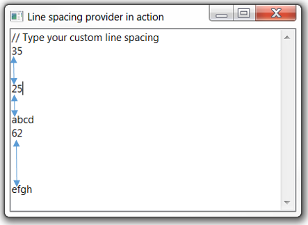
FontMetrics:
double getAverageCharacterWidth()
int getAverageCharWidth()
The method FontMetrics#getAverageCharWidth() has been deprecated.
org.eclipse.swt.events.ControlListenerorg.eclipse.swt.events.ExpandListenerorg.eclipse.swt.events.MenuListenerorg.eclipse.swt.events.TreeListenerorg.eclipse.swt.events.MouseTrackListenerorg.eclipse.swt.events.ShellListenerorg.eclipse.swt.custom.ControlListenerorg.eclipse.swt.browser.LocationListenerorg.eclipse.swt.browser.ProgressListenerorg.eclipse.swt.browser.VisibilityWindowListener
A snippet to demonstrate can be found Snippet370 .
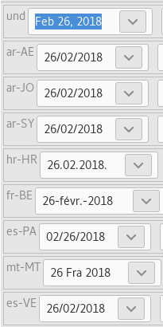
Color on GTK only supported Red, Green and Blue (RGB) values
(all colors were opaque by default). Now, users can set alpha values to manipulate the transparency
property of SWT colors on GTK3.
The image below shows a red Canvas widget that is half transparent (alpha set to 0.5).
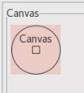Group widget text can now have a different color than the system default. Client can use Group#setForeground(Color)
to change the text color. Screen-shot for reference:
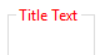
Button.setBackground() can now set the background color for a Button on Mac.
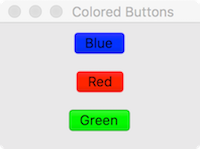
Text.setBackground(Color) can be used to set the background color of a Text widget with SWT.SEARCH style on Mac as well.
This already works on Windows and GTK.
Monitor.getZoom() has been added which returns the zoom value used by SWT for the Monitor.
The zoom value returned by the API is the zoom used by SWT that is controlled by the swt.autoScale property. It may not be the same value
as that is set in the system. It can be used in other SWT APIs that require zoom as an input such as Image.getImageData(zoom) to get the ImageData
at the zoom level for the specific Monitor on which it'll be drawn.
There are two use-cases of the API:
- When the DPI of the monitor changes dynamically, the API can be used to return the new DPI.
- On platforms that support a multi-monitor setup where different monitors can have different DPIs, the API can be used to get the DPI of the specific monitor on which a Control is drawn.
Equinox Changes
Import-Package or
Require-Bundle manifest headers. Such dependencies are described by the
Require-Capability and Provide-Capability manifest headers, which p2 can now process.
For example, a consumer bundle may import the API package of an OSGi service (Import-Package) and
also require an implementation of the API (Require-Capability). A provider bundle may also import
the API package in order to implement it (Import-Package) and then declare it
provides an implementation of the service (Provide-Capability). The API package can be distributed
by a third party that maintains the service specification. When the consumer bundle is provisioned p2 will also
provision the API and the provider bundles. The case used to be that p2 would provision only the consumer and
the API, leaving to you the task to discover a provider.
download.checksum.sha-256artifact.checksum.sha-256
org.eclipse.equinox.artifact.comparator.checksum.sha-256 as a comparator ID.
org.eclipse.equinox.p2.artifact.repository.artifactChecksums, it is now possible to contribute any MessageDigest implementation as a way to calculate and check artifact's checksums:
- Register your contribution:
<extension point="org.eclipse.equinox.p2.artifact.repository.artifactChecksums"> <artifactChecksum algorithm="TIGER" id="tiger"/> </extension> - In your bundle's Activator, register a SecurityProvider that provides an actual MessageDigest implementation:
public void start(BundleContext context) throws Exception { Security.addProvider(new BouncyCastleProvider()); } - Create p2 repository
Artifact's checksum will be calculated using your implementation and stored in two new properties,
download.checksum.tigerandartifact.checksum.tiger. - Consume in p2 client
If p2 client has no support for such MessageDigest implementation, it will ignore it.
artifactChecksums extension point's documentation.